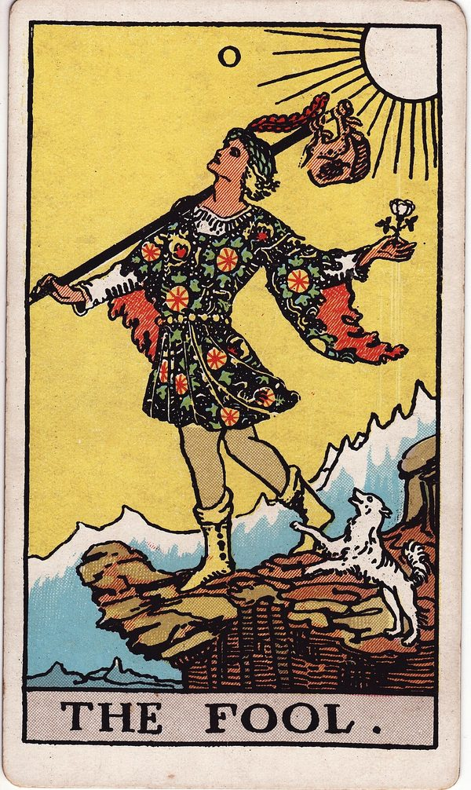
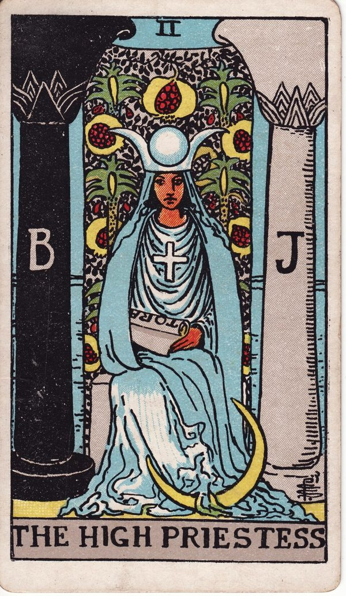
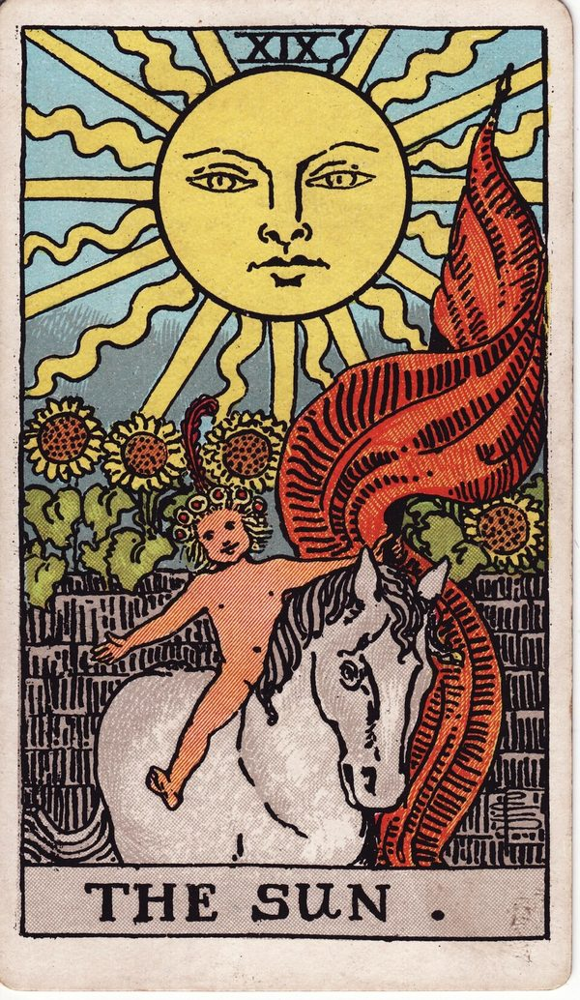
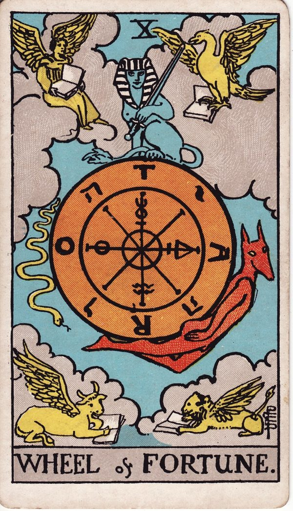
塔羅抽牌，交給 AI 解牌
線上抽牌或輸入你手上實體牌的結果，這裡會把問題、牌陣、牌位與正逆位整理成一份完整的解牌 Prompt，複製後貼到 ChatGPT、Claude 或 Gemini 就能得到解讀。
不知道問什麼？點一個開始
點了會帶入問題頁，可以再修改成你自己的狀況。
16 種牌陣，會依你的問題推薦
- 單張指引
- 時間之流
- 棘手關係
- 二擇一
- 能量運勢
- 凱爾特十字
另有是非題、三擇一、事件洞察、自我探索等牌陣，分成快速指引、時間與趨勢、人際關係、決策與行動、自我探索、綜合 6 組。
範例：抽完牌會得到什麼
問題我要如何爭取升遷的機會？（事業・三個月內・時間之流）
- 過去
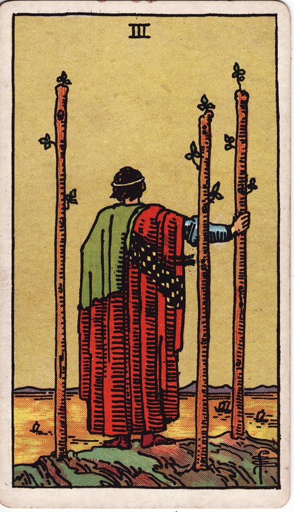
權杖三・正位 - 現在
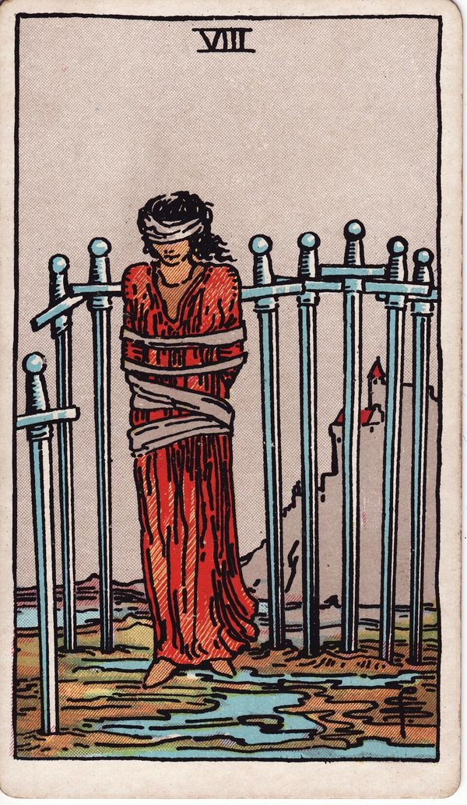
寶劍八・逆位 - 未來
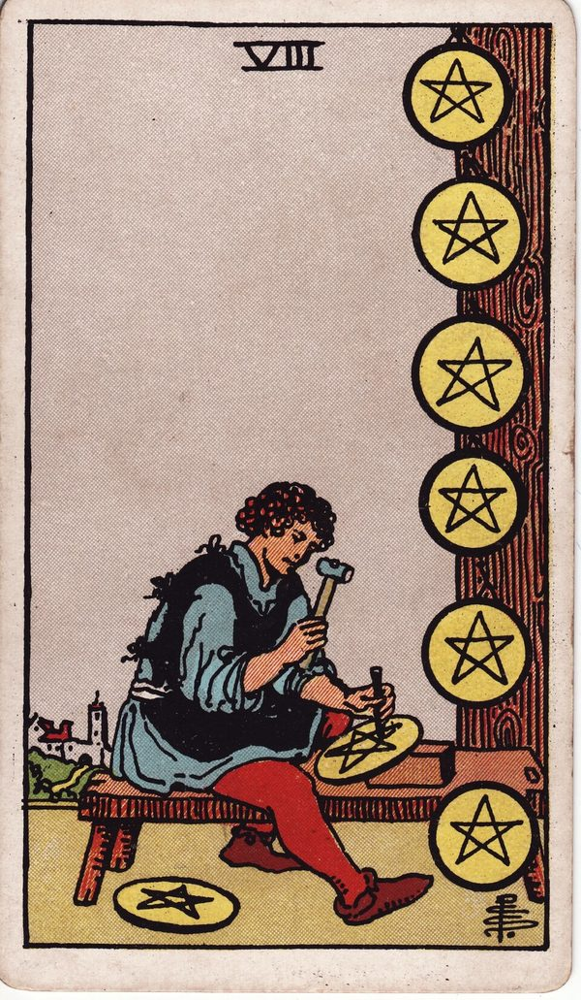
錢幣八・正位
網站整理出的 Prompt（節錄）
你是一位經驗豐富的塔羅解讀師，熟悉偉特—史密斯塔羅體系。請根據下方的設定（YAML）與牌面資料（JSON）為我解牌。
querent:
question: "我要如何爭取升遷的機會？"
category: "事業"
timeframe: "三個月內"
spread:
name: "時間之流"
card_count: 3
reversed_reading_rules: …
output:
tone: …
language: "繁體中文"
{ "no": 2, "position": "現在", "position_meaning": "目前約一個月的狀態",
"card": "寶劍八", "card_en": "Eight of Swords", "orientation": "逆位" }
…（另含牌面統計：大牌比例、元素分布、重複數字）
貼到 ChatGPT 後的解讀（節錄）
過去・權杖三：你已經開始思考更長遠的職涯發展，並非毫無準備。但要留意，你可能正在等待別人主動發現你的價值，而努力與被看見並不完全相同。
現在・寶劍八（逆位）：採用「能量不足」的解讀：束縛正在減弱，但還沒完全擺脫。有些限制來自尚未驗證的假設，例如擔心太有野心、猜測主管已有人選。直接詢問升遷標準，比反覆猜測更有幫助。
未來・錢幣八：未來兩到三個月，最值得投入的是建立足以支持升遷的績效證據，例如承接有影響力的專案、改善工作流程。
牌與牌的關聯：連續出現兩張「八」，課題是從「我是否有資格」轉向「我要如何證明」；三張牌缺少水元素，也別忘了經營與主管、同事的信任關係。
行動建議：第一個月釐清升遷條件，第二個月交付一項可量化的成果，第三個月整理證據、正式表達升遷意願。
一句話總結：停止被不確定感困住，主動表達企圖心，用具體可衡量的成果，讓自己成為值得被考慮的人選。
以上節錄自 ChatGPT 的實際回覆，原文還有完整牌面說明與三個月行動清單；實際內容依你使用的 AI 而定。
怎麼用
- 寫下問題選擇想問的方向，點選幾個關於你的狀況，不知道怎麼問也有提示。
- 抽牌從 16 種牌陣中挑一個，線上隨機抽牌，或輸入你手上實體牌的結果。
- 交給 AI 解牌複製整理好的 Prompt，貼到 ChatGPT、Claude 或 Gemini。
使用 1909 年原版偉特塔羅（Rider–Waite–Smith）牌圖。免費使用，資料只存在你的瀏覽器；可以「加到主畫面」當成 App 使用。
3 分鐘認識塔羅
已經熟悉塔羅可以跳過；想先複習一下，點開任一主題。
一副牌的組成：78 張
- 22大牌人生課題與轉折
- 40數字牌一～十，各四種花色
- 16宮廷牌侍從、騎士、皇后、國王
大牌（Major Arcana，又稱大阿爾克那）是一組有編號的象徵牌，從 0 號「愚者」到 21 號「世界」。小牌（Minor Arcana）共 56 張，分成權杖、聖杯、寶劍、錢幣四種花色，每種花色有一到十的數字牌，加上四張宮廷牌。
本站使用的是 1909 年由 Pamela Colman Smith 繪製的偉特—史密斯（Rider–Waite–Smith）原版牌。它的小牌也畫有完整的情境畫面，影響了後來大多數的塔羅牌，現今許多塔羅書與牌義都以它為基準。
22 張大牌：愚者的旅程
大牌常被解讀成一段旅程：0 號愚者帶著好奇出發，一路遇見其他大牌代表的人物與課題，最後走到 21 號世界，完成一個循環。
- 0 愚者旅程的起點一切的可能性，帶著開放的心踏出第一步。
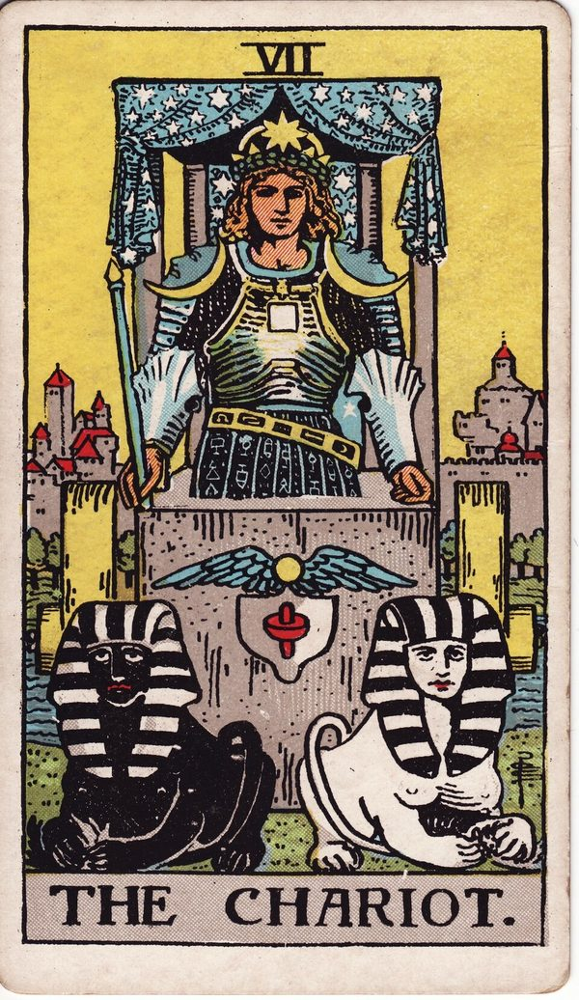
1～7 魔術師 → 戰車建立自我學習運用資源、認識規範與關係，靠意志向外爭取。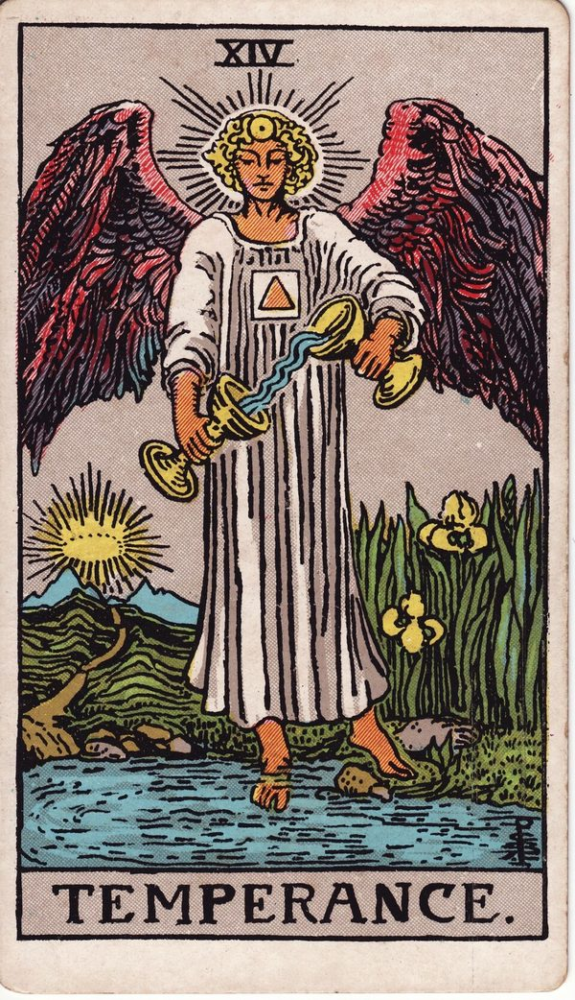
8～14 力量 → 節制向內探索學會耐心與取捨，面對停滯、結束與轉變，找回平衡。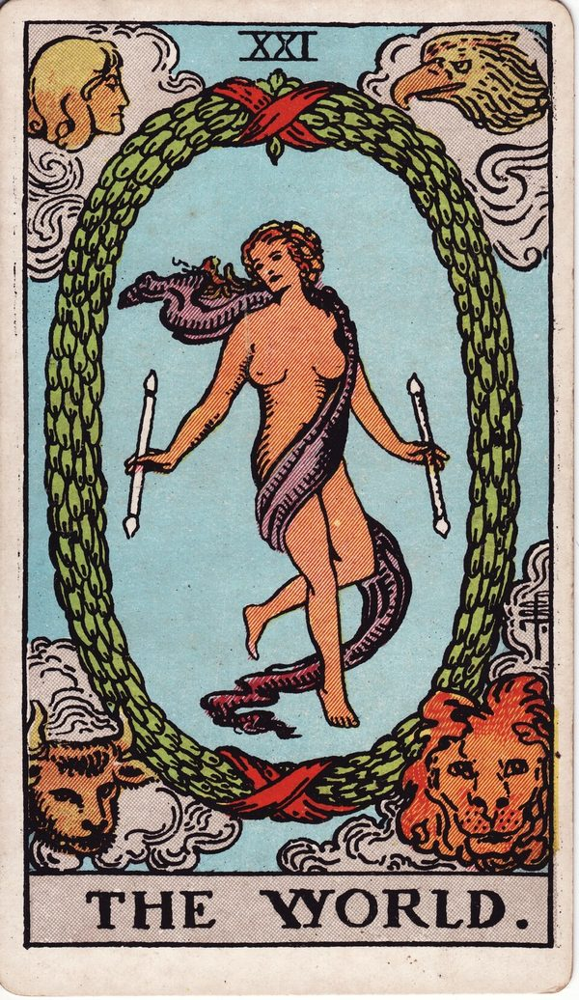
15～21 惡魔 → 世界突破與圓滿面對慾望與陰影，經過崩解、希望與覺醒，最後完成整合。
解讀時：大牌通常代表較大、較深層的力量。一次抽到很多大牌，表示這件事對你影響深遠，或正處於重要轉折；大多是小牌時，課題比較貼近日常的選擇與行動，自己能掌握的部分也比較多。
四種花色與元素
小牌的四種花色各對應一種元素。看一組牌時，哪個元素特別多或完全沒有，常常就是解讀的線索。
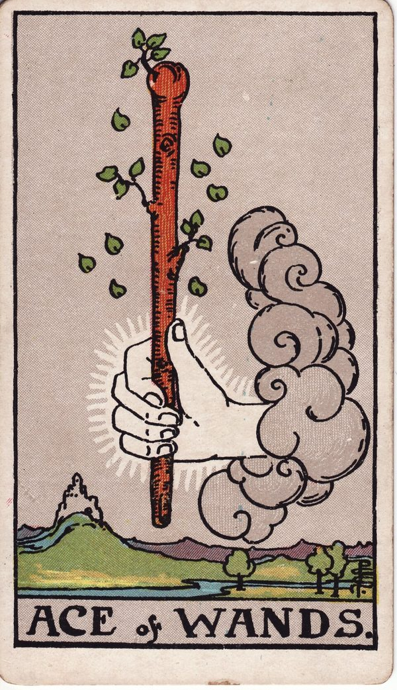
權杖・火陽性：向外、積極行動行動、事業、移動。熱情、企圖心與創造力；常出現在工作與目標相關的問題。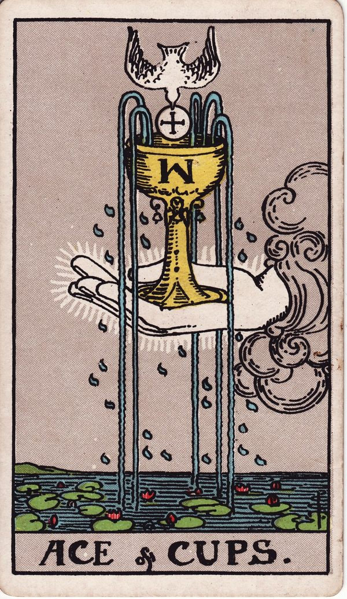
聖杯・水陰性：向內、情緒訊息豐富情緒、感受、愛、藝術靈感。關係與內心感受；常出現在感情與人際問題。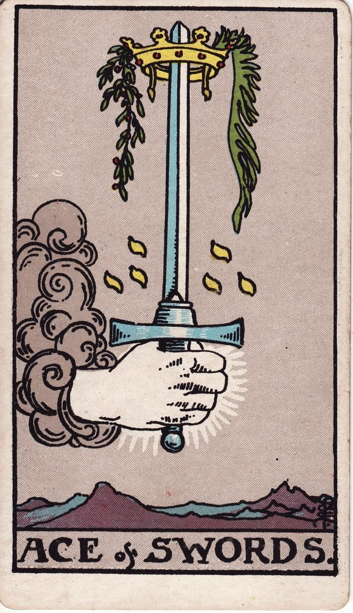
寶劍・風陽性：向外、行動與衝突思維、溝通、智慧、計劃。判斷、決定與壓力；也代表爭執、焦慮或需要切割的事。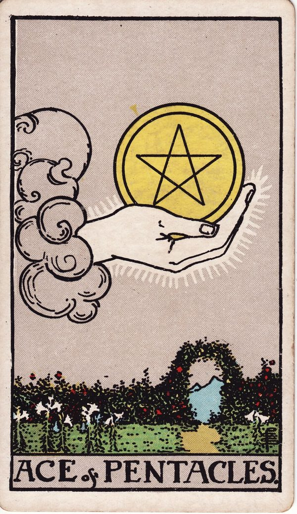
錢幣・土陰性：向內、務實穩定金錢、資源、物質、健康。收入、工作成果與身體狀況；重視實際、可累積的成果。
元素多寡：例如火很多、水很少，可能代表行動力強，卻忽略了感受與關係。本站產生的 Prompt 會附上元素分布（大牌依黃金黎明體系的占星對應計入），讓 AI 一併參考。
數字牌：一到十的意義
同一個數字在四種花色裡有共通的主題，只是發生的領域不同。例如「五」都和改變、動盪有關：權杖五是競爭，聖杯五是失落，寶劍五是爭執，錢幣五是匱乏。每個數字都有能量好與能量低落兩種表現：
| 數字 | 主題 | 能量好時 | 能量低落時 |
|---|---|---|---|
| 1 | 開始 | 新的階段與開始 | 遲遲沒有開始、為做而做、自我中心 |
| 2 | 選擇與平衡 | 合作、連結、平衡 | 對立、出現競爭 |
| 3 | 發展與成長 | 發展、創意、團結 | 向下衰退 |
| 4 | 穩定 | 穩定、安全、保守 | 守舊、不知變通 |
| 5 | 改變 | 突破、改變、冒險 | 混亂與衝動 |
| 6 | 調和 | 調和、整理、協調 | 妥協、過度熱心 |
| 7 | 個人特質 | 分析、獨特、做自己 | 特立獨行、孤軍奮戰 |
| 8 | 模式與循環 | 循環、執行力佳 | 執念、控制欲強 |
| 9 | 飽和 | 收穫豐盛、智慧與包容 | 未被滿足、期待落空 |
| 10 | 階段完成 | 圓滿、階段的結束與新開始 | 負荷到極限、只能接受結局 |
重複數字：同一個數字出現兩次以上，代表這個主題特別明顯。例如多張一，代表很多新的開始；多張五，代表變動與衝突集中。本站會統計重複數字並寫進 Prompt。
宮廷牌：人物，也是狀態
每種花色有四張宮廷牌，可以代表身邊的某個人，也可以代表你自己在這件事裡的成熟度與做事方式。花色決定性格，階級決定成熟度：例如聖杯騎士是浪漫、跟著感受行動的人，錢幣國王是穩重、掌握資源的人。
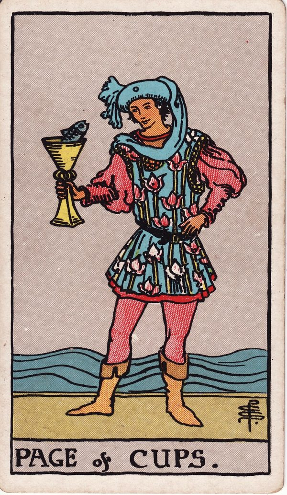
侍從Page新手、不成熟、新階段或嘗試性的體驗；也常代表消息與邀請。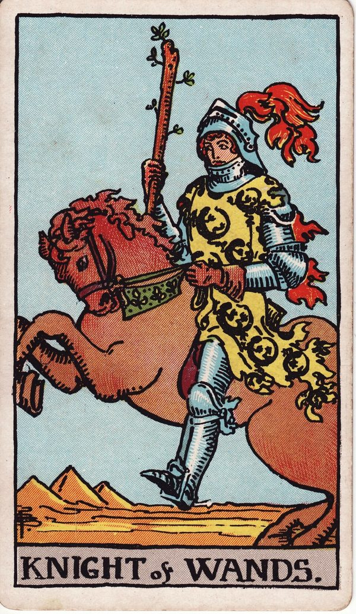
騎士Knight累積實力中、勇於挑戰，為目標移動與推進。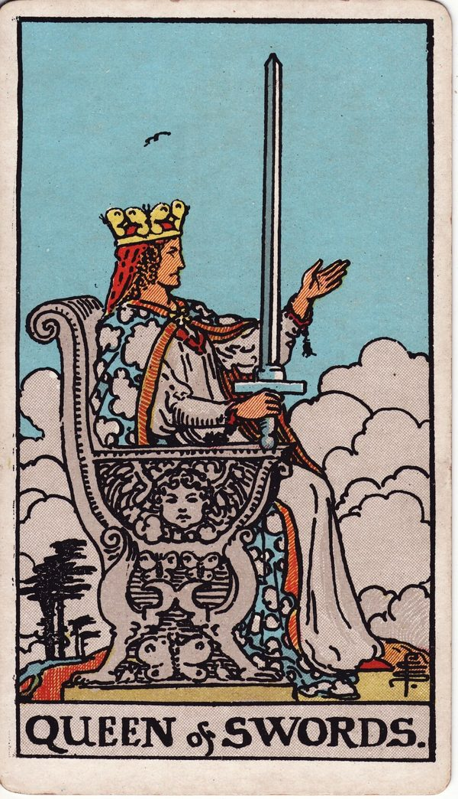
皇后Queen支持與輔導他人；陰性能量，包容轉化式的領導。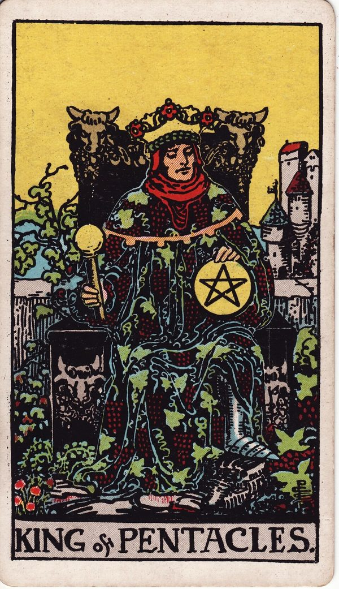
國王King領域中的權威；陽性能量，命令式領導並肩負社會責任。
解讀時：一次出現很多宮廷牌，通常代表這件事牽涉的人很多，或別人的意見影響很大。
正位與逆位
牌面朝上是正位，倒過來是逆位。逆位不等於壞事，比較像是同一種能量出現了不同的狀態。常見的讀法有：
- 能量不足：有正位的能量但不夠充足，是目前要學習的課題。
- 能量過多：正位的能量過頭，需要調節。
- 相反含義：取正位意義的反面。
- 回推前一張牌：大牌順序中前一張的課題還沒完成，例如太陽逆位，回到月亮。
- 取牌面元素：直接用畫面上的人物、物件對應問題。
- 維持正位意義：和其他牌搭配時，正逆位差異不大。
- 視為「沒有」：多張逆位都呈現能量不足時，可解讀為沒有、結束、沒有發展空間。
本站的系統抽牌正逆位各占一半，也可以設定「只用正位」；自我探索類牌陣一律以正位解讀。Prompt 會附上這些讀法，請 AI 依脈絡選用並說明理由。
牌陣與牌位
牌陣決定要抽幾張牌、每張牌放在哪個位置，以及每個位置代表什麼。同一張牌放在不同位置，意思就不同：寶劍三在「過去」是已經發生的傷心事，在「建議」則可能是提醒你正視難過的情緒。
- 張數少（1～3 張）：回答單一、明確的問題，例如今天的提醒、是非傾向、過去現在未來。
- 中等（4～7 張）：看關係中雙方的態度、比較兩三個選擇，或拆解一件事的原因與阻礙。
- 張數多（10 張）：例如凱爾特十字，全面分析一件事的來龍去脈。
不確定要用哪個牌陣也沒關係，填完問題後，本站會依你的問題類別與狀況推薦。
抽牌前的小提醒
- 先想清楚問題：問題越具體，解讀越有用。以自己為主角、問三個月內的事，效果最好。
- 專注再抽：抽牌前花幾秒默念問題。本站的系統抽牌也有靜心倒數，不需要時可以跳過。
- 同一個問題不要反覆抽：一直重抽，直到出現想要的答案，只會讓自己更混亂。真的看不懂，可以補抽一張指引牌。
- 跳出牌也是訊息：用實體牌洗牌時自己掉出來的牌，可以在手動輸入時一起加入，當作額外提示。
- 保留判斷力：牌給的是觀點與提醒，最後的決定還是在你。
常見問題
需要付費或註冊嗎？
不用。抽牌、產生 Prompt 都免費，也不需要帳號。把 Prompt 貼到 ChatGPT、Claude 或 Gemini 的免費版就能解讀。設定裡的 API key 是選用功能，沒有也能完整使用。
什麼是 Prompt？為什麼不直接在網站上解牌？
Prompt 就是要貼給 AI 的提問內容。直接問 AI「幫我解牌」常常資訊不完整；這裡會把問題、背景、每個牌位的意義、正逆位和牌面統計整理好，AI 才能解得具體。你可以選自己習慣的 AI，也能在同一個對話裡繼續追問。
沒有實體牌可以用嗎？
可以。選「系統自動抽牌」，網站會用瀏覽器內建的安全亂數洗牌，正逆位各占一半。有自己的牌，就選「實體牌手動輸入」。
我的問題會被別人看到嗎？
不會。本站沒有伺服器，問題和占卜紀錄只存在你的瀏覽器。只有當你把 Prompt 貼到 AI 服務，或在設定中使用自己的 API key 時，內容才會送到那家 AI 服務。
塔羅準嗎？
塔羅比較像一面鏡子，幫你整理想法、看見平常忽略的角度，而不是決定未來的答案。問三個月內、以自己為主角的問題，通常最有收穫。健康、法律、財務等重大決定，請諮詢專業人士。
你想問什麼？
請先輸入問題
不知道怎麼問？先隨意寫個大概，填完下面的狀況後，可以。
好問題的 5 個原則
| 原則 | 不建議 | 建議 |
|---|---|---|
| 以自己為主角 | 伴侶會不會加薪？ | 我想增加家庭收入，該從哪裡著手？ |
| 根據真實狀況，不問假設 | 等我懷孕以後，他會不會變心？ | 我現在該怎麼經營這段關係？ |
| 以三個月內為主 | 我幾歲會遇到真命天子？ | 最近三個月我的桃花運勢如何？ |
| 真心想知道的事 | 隨口問、為了測試而問 | 你此刻最在意、最想釐清的那件事 |
| 用肯定句發問 | 我能不能升遷？ | 我要如何爭取升遷的機會？ |
交代背景與條件，比一句簡短的問題更能得到具體的解讀。
背景問卷
說說你的狀況
更多資訊（其他補充、性別、年齡）
AI 幫我整理問題
參考問題與背景整理問法；資訊不足時，會先請你補充。
請在心中默念你的問題
占卜紀錄
紀錄只存在這台裝置的瀏覽器，清除瀏覽資料或換裝置後就不會有。
找不到這筆紀錄
它可能已經被刪除，或是存在另一台裝置上。
回首頁